概述
ubus为openwrt平台开发中的进程间通信提供了一个通用的框架，类似linux桌面操作系统的d-bus，目标是提供系统级的进程间通信（IPC）功能,它让进程间通信的实现变得非常简单，并且ubus具有很强的可移植性，可以很方便地移植到其他linux平台上使用。ubus是为进程间发送消息而设计的，不适合传输大量数据（进程间传输大量数据应采用共享内存）
ubus源码可通过Git库git://nbd.name/luci2/ubus.git获得，其依赖的ubox库的git库git://nbd.name/luci2/ubox.git。
 {width=”4.861360454943132in”
height=”3.5696281714785654in”}
{width=”4.861360454943132in”
height=”3.5696281714785654in”}
简单理解它就是一个消息总线，用来串联服务之间的通讯，所有的消息均通过ubus进行转发处理。
就是我们的消息 Route。
基本使用
 {width=”5.768055555555556in”
height=”3.0659722222222223in”}
{width=”5.768055555555556in”
height=”3.0659722222222223in”}
示例
列出已经注册的服务：
root@uplink:~# ubus list
network
network.device
network.interface.lan
network.interface.loopback
network.interface.wan添加-v 指令，并查看具体可执行方法
root@uplink:~# ubus -v list network.interface.lan
'network.interface.lan' @099f0c8b
"up": { }
"down": { }
"status": { }
"prepare": { }
"add_device": { "name": "String" }
"remove_device": { "name": "String" }
"notify_proto": { }
"remove": { }
"set_data": { }调用call方法进行跨进程rpc调用，并获得相应的返回值
root@uplink:~# ubus call network.interface.wan status
{
"up": true,
"pending": false,
"available": true,
"autostart": true,
"uptime": 86017,
"l3_device": "eth1",
"device": "eth1",
"address": [
{
"address": "178.25.65.236",
"mask": 21
}
],
"route": [
{
"target": "0.0.0.0",
"mask": 0,
"nexthop": "178.25.71.254"
}
],
"data": {
}
}通过listen 监听所有的消息情况
root@uplink:~# ubus listen &
root@uplink:~# ubus call network.interface.wan down
{ "network.interface": { "action": "ifdown", "interface": "wan" } }
root@uplink:~# ubus call network.interface.wan up
{ "network.interface": { "action": "ifup", "interface": "wan" } }
{ "network.interface": { "action": "ifdown", "interface": "he" } }
{ "network.interface": { "action": "ifdown", "interface": "v6" } }
{ "network.interface": { "action": "ifup", "interface": "he" } }
{ "network.interface": { "action": "ifup", "interface": "v6" } }通过send发送消息:
root\@uplink:\~\# ubus send foo \'{ \"bar\": \"baz\" }\'结构
 {width=”5.594444444444444in”
height=”4.017361111111111in”}
{width=”5.594444444444444in”
height=”4.017361111111111in”}
工程的核心是ubusd精灵进程，它提供了一个总线层，在系统启动时运行，负责进程间的消息路由和传递。
Ubus client注册到ubusd进程进行消息的发送和接收，它实际上是一个操作库或接口，相当于sdk。相对于ubusd它是一个客户端，所以称它为ubus client（ubus service更贴切）。例如下图的session和uci。
这个接口是用linux文件socket和TVL（Type-length-value）实现的，每一个进程在指定命名空间下注册自己的路径。每一个路径都可以提供带有各种参数的多个函数处理过程。函数处理过程程序可以在完成处理后返回消息。
Ubus cli 是ubus提供的操作工具，我们通过它能够对ubus进行操作。例如 ubus list就是中的ubus即为cli。
 {width=”5.768055555555556in”
height=”3.2527777777777778in”}
{width=”5.768055555555556in”
height=”3.2527777777777778in”}
代码分析
代码地址：
根据代码分析可知，ubus是依赖了一个ubox的库，进行相应的socket操作。使得socket编程更为简单。
ubusd分析
ubusd.c中入口
int main(int argc, char **argv)
{
const char *ubus_socket = UBUS_UNIX_SOCKET;
int ret = 0;
int ch;
signal(SIGPIPE, SIG_IGN);
//uloop初始化
uloop_init();
while ((ch = getopt(argc, argv, "s:")) != -1) {
switch (ch) {
case 's':
ubus_socket = optarg;
break;
default:
return usage(argv[0]);
}
}
unlink(ubus_socket);
umask(0177);
//建立一个非阻塞 sock 服务，并赋值给 server_df
server_fd.fd = usock(USOCK_UNIX | USOCK_SERVER | USOCK_NONBLOCK, ubus_socket, NULL);
if (server_fd.fd < 0) {
perror("usock");
ret = -1;
goto out;
}
//添加read 事件监听
uloop_fd_add(&server_fd, ULOOP_READ | ULOOP_EDGE_TRIGGER);
//uloop 并阻塞 ，里面会回调 server_fd.cb 方法
uloop_run();
unlink(ubus_socket);
out:
uloop_done();
return ret;
}在main函数中，可看到uloop相关都是ubox的标准接口，初始化、添加fd、run、done。按照上面的流程写也能写一个简单的socket server。
上面很重要的一个uloop_fd_add(&server_fd)方法。server_fd是一个uloop_fd结构里面需要设置callback方法，用于数据处理。
static struct uloop_fd server_fd = {
.cb = server_cb,
};
struct uloop_fd
{
uloop_fd_handler cb;
int fd;
bool eof;
bool error;
bool registered;
uint8_t flags;
};server_cb 是 uloop_fd_handler ，该类型在uloop.h中已经定义。
##typedef void (*uloop_fd_handler)(struct uloop_fd *u, unsigned int events);
static void server_cb(struct uloop_fd *fd, unsigned int events)
{
bool next;
do {
next = get_next_connection(fd-fd);
} while (next);
}uloop_fd_handler在什么时候被调用呢？可以在uloop_run方法中看到，当事件触发时，会回调cb方法。
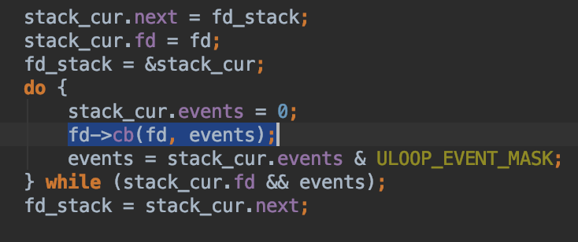{width=”5.0974846894138235in” height=”2.138999343832021in”}
那么重点就是get_next_connection方法了。
 {width=”5.768055555555556in”
height=”4.472222222222222in”}
{width=”5.768055555555556in”
height=”4.472222222222222in”}
accept是socket的方法，accpet之后，会建立一个socket连接,ubusd_proto_new_client会将client_fd添加到二叉树中，存储所有的client。并注册client_cb。
client_cb即描述了发送消息，接收消息、处理消息等方法。由于内容较多，这里只描述重要的方法，其他方法可自行查看。
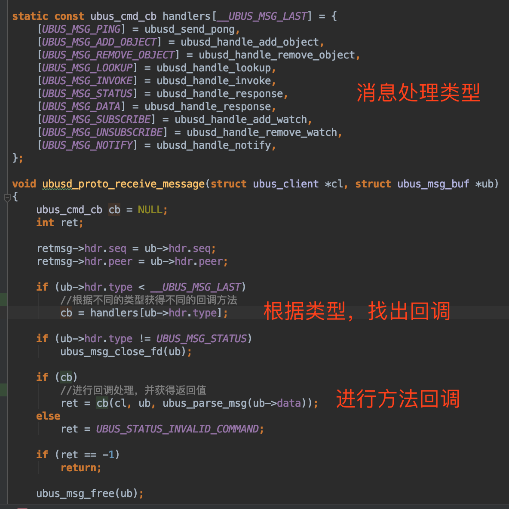{width=”5.768055555555556in” height=”5.768055555555556in”}
我们挑选一个rpc的方法进行查看，即ubusd_handle_invoke方法。
 {width=”5.768055555555556in” height=”3.28125in”}
{width=”5.768055555555556in” height=”3.28125in”}
由于ubusd是一个转发器，所以它并不处理真实的rpc请求，而是将它转发给实际要执行的client。
ubus service
在ubus源码中example文件夹中有server.c，它就是一个ubus service的demo。
 {width=”5.768055555555556in”
height=”6.233333333333333in”}
{width=”5.768055555555556in”
height=”6.233333333333333in”}
可以看到同样适用了标准化的init 、add_uloop、done等方法。最主要的是server_main方法，
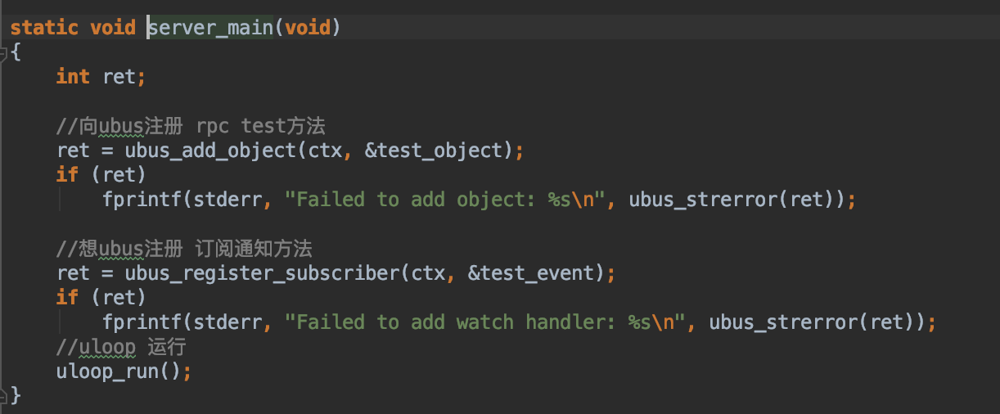{width=”5.768055555555556in” height=”2.3881944444444443in”}
ubus_add_object方法进行服务的注册，test_object则是个ubus_object对象，里面定义了name、method等信息。
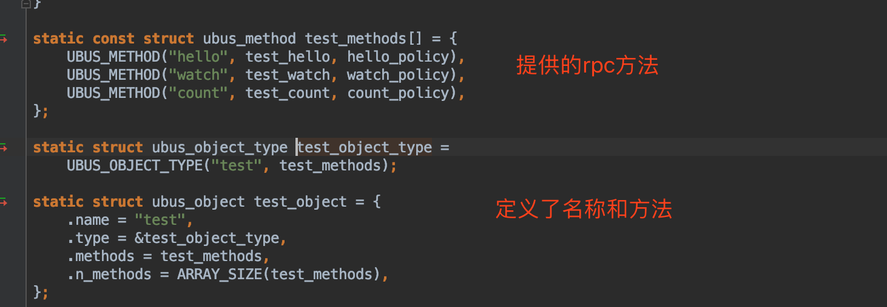{width=”5.768055555555556in” height=”2.004166666666667in”}
这里挑选一个hello方法进行查看。Hello方法收到消息后，对数据进行解析，并组合需要返回的内容，由于本service的名字为test，即test receiverd a message %s ,%s为具体接收到的数据。
 {width=”5.768055555555556in”
height=”2.752083333333333in”}
{width=”5.768055555555556in”
height=”2.752083333333333in”}
ubus cli
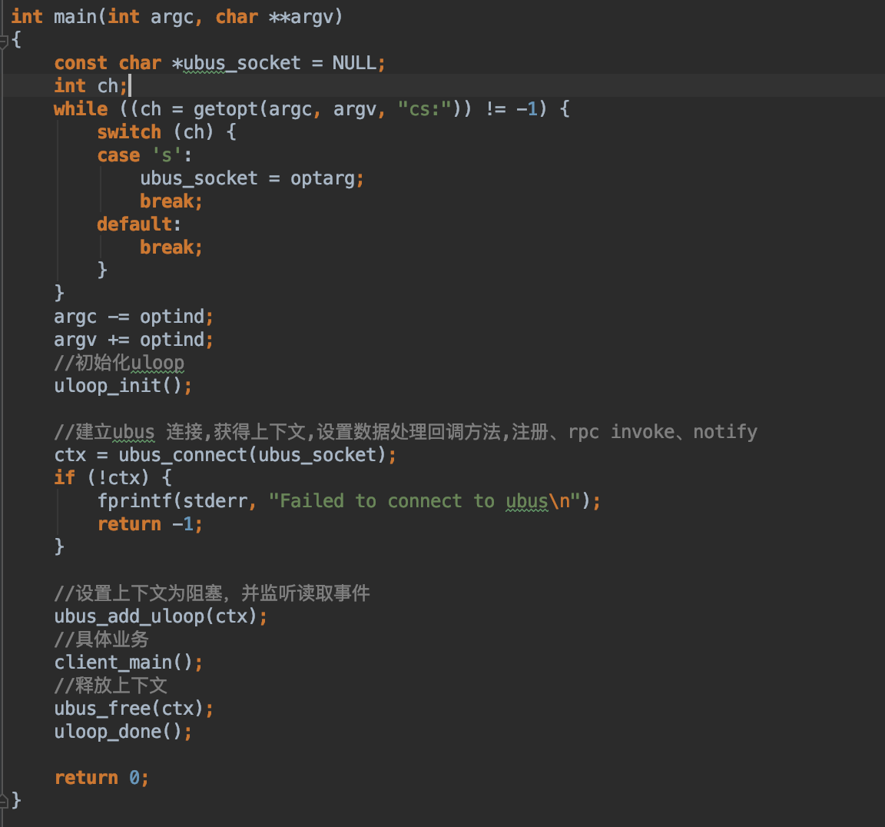{width=”5.768055555555556in” height=”5.3875in”}
 {width=”5.768055555555556in”
height=”2.907638888888889in”}
{width=”5.768055555555556in”
height=”2.907638888888889in”}
 {width=”5.768055555555556in”
height=”1.3215277777777779in”}
{width=”5.768055555555556in”
height=”1.3215277777777779in”}
demo
将源码在openwrt的编译环境编译后，放到openwrt中，先执行service
 {width=”5.583619860017498in”
height=”1.027830271216098in”}
{width=”5.583619860017498in”
height=”1.027830271216098in”}
再执行client
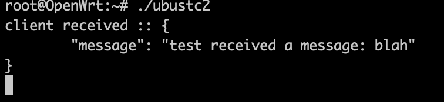{width=”5.2502701224846895in” height=”1.2083956692913387in”}
官方的log
通过执行ubus –v list，可以看到log 有 read、write方法，我们可以借此来分析一下源码，以确认我们前面的推理。
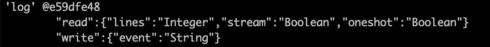{width=”5.768055555555556in” height=”0.55625in”}
Log的service源码是在ubox中，名字为logd.c。
 {width=”5.768055555555556in”
height=”5.7555555555555555in”}
{width=”5.768055555555556in”
height=”5.7555555555555555in”}
 {width=”5.768055555555556in”
height=”2.0118055555555556in”}
{width=”5.768055555555556in”
height=”2.0118055555555556in”}
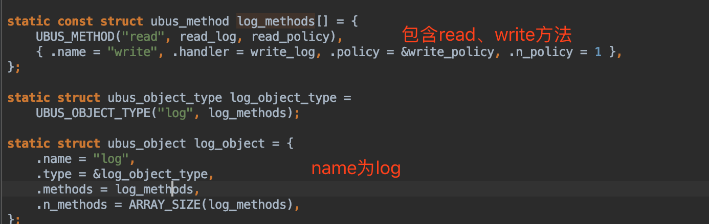{width=”5.768055555555556in” height=”1.83125in”}
Rpcd
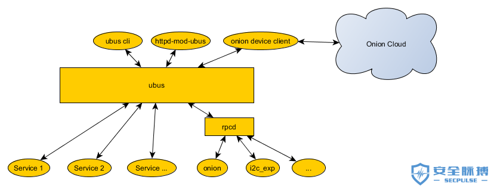{width=”5.768055555555556in” height=”2.2503215223097115in”}
Rpcd是一个比较特殊的实现，它在实现了ubus service的基础上，进行了扩展，可以实现通过 http 来访问 ubus 总线（luci实现），并且也支持了加载本地shell。
这里介绍一下本地shell的加载(mwan3的通过该方法实现ubus调用)
下载rpcd源码进行查看，发现session、uci、iwinfo、file是通过rpcd实现的。
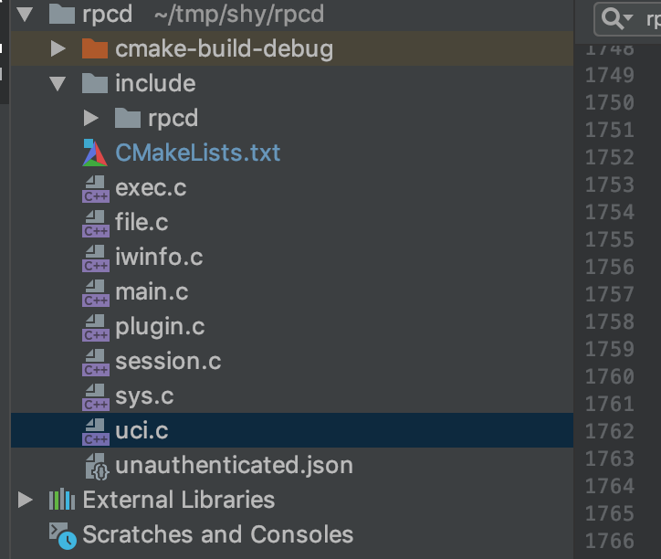{width=”5.028035870516185in” height=”4.2502187226596675in”}
 {width=”5.278048993875766in”
height=”5.028035870516185in”}
{width=”5.278048993875766in”
height=”5.028035870516185in”}
Rpcd加载shell的目录如下：
 {width=”5.583619860017498in”
height=”0.6805905511811023in”}
{width=”5.583619860017498in”
height=”0.6805905511811023in”}
按照过则编辑一个脚本：/usr/libexec/rpcd/foo
#!/bin/sh
case "$1" in
list)
echo '{ "bar": { "arg1": true, "arg2": 32, "arg3": "str" }, "toto": { } }'
;;
call)
case "$2" in
bar)
# read the arguments
read input;
# optionally log the call
logger -t "foo" "call" "$2" "$input"
# return json object or an array
echo '{ "hello": "world" }'
;;
toto)
# return json object or an array
echo '[ "item1", "item2", "item3" ]'
;;
esac
;;
esac/etc/init.d/rpcd reload 或 重启。
 {width=”3.180718503937008in”
height=”1.4584087926509186in”}
{width=”3.180718503937008in”
height=”1.4584087926509186in”}
 {width=”5.768055555555556in” height=”0.8625in”}
{width=”5.768055555555556in” height=”0.8625in”}
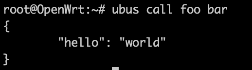{width=”3.597407042869641in” height=”1.0000513998250218in”}
其他
什么是TVL
http://www.wtango.com/tlv%E7%BC%96%E7%A0%81%E9%80%9A%E4%BF%A1%E5%8D%8F%E8%AE%AE%E8%AE%BE%E8%AE%A1/
Bus的意义是什么？
有人整理了Unix/Linux IPC的七大分类：
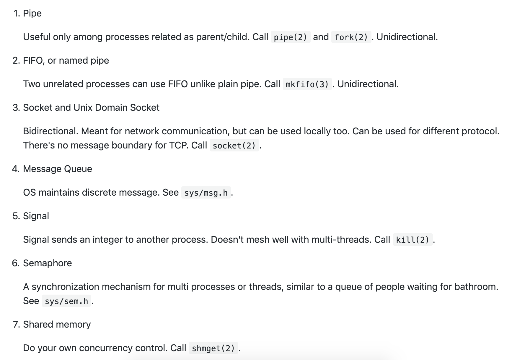{width=”5.768055555555556in” height=”4.064583333333333in”}
原文：<https://github.com/robbie-cao/kb-openwrt/blob/master/UBUS.md
这有涉及到SOA中esb相关知识了。
https://www.cnblogs.com/zdz8207/p/java-esb.html
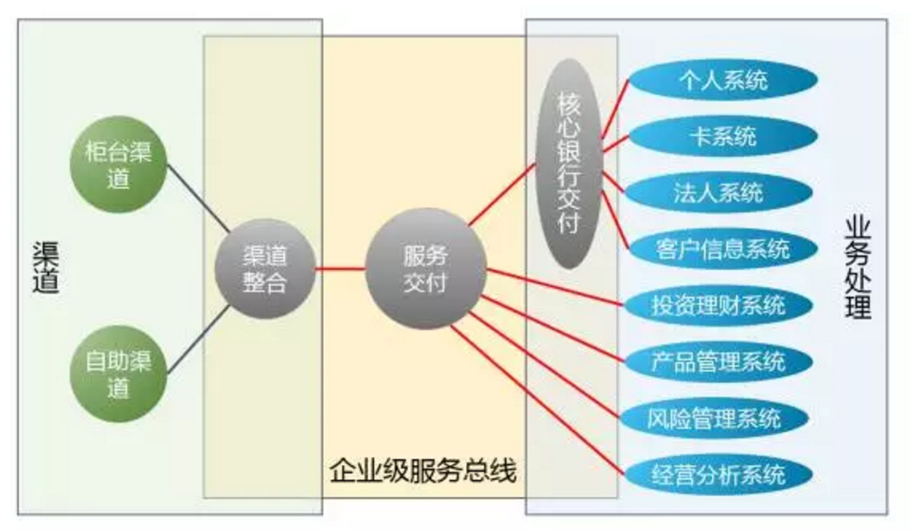{width=”5.768055555555556in” height=”3.365980971128609in”}
我们怎么使用？
Mqtt client可以参考之前的servcie进行实现，通过ubus进行跨进程间的通讯，将数据交付到mqtt 服务中，这样mqtt client与mqtt borker就只有一个连接了。